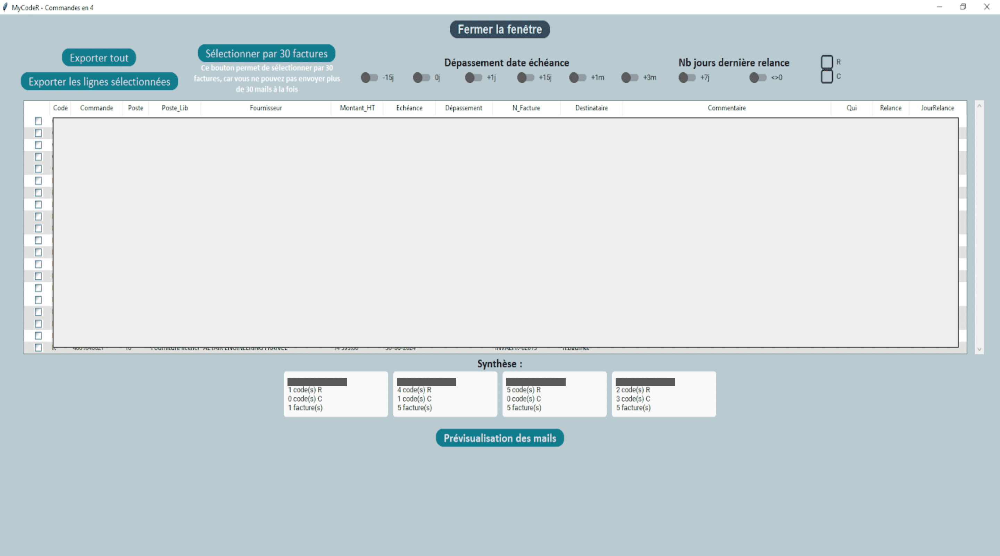

Ce projet, réalisé lors de mon stage de deuxième année de BUT informatique, consistait à créer une application en Python (librairie CustomTkinter et Tkinter), qui a pour but d’accélérer le processus d'envoi des mails pour chaque cas de code R qui est fastidieux et répétitif pour les gestionnaires. Un code R correspond à une commande où l'entrée fournisseur est comptabilisée et intégrée dans SAP, mais l'entrée marchandise ne l'est pas, ce qui crée une différence entre l'entrée fournisseur et l'entrée marchandise.
RESSOURCES
Projet en groupe (3 personnes)
Développement en Python
Développement d'interface
Analyse
CONTEXTE
Durée : 12 semaines
Attente : automatiser le plus possible la tâche.

(Les données sont masquées pour des raisons de confidentialité professionnelle).
Cette fenêtre permet au gestionnaire de sélectionner les e-mails à relancer. Il peut exporter toutes les lignes ou uniquement celles sélectionnées, appliquer des filtres basés sur le dépassement de date d'échéance ou le nombre de jours depuis la dernière relance, et ajouter des commentaires. Enfin, il a la possibilité de prévisualiser les mails avant de les envoyer.
Relations entre les réalisations personnelles et le programme de BUT Informatique
AC 31.02 - Faire évoluer une application existante
en choisissant les ressources techniques appropriées. CE 1.06
Ex : Utilisation d'Anaconda Navigator avec un environnement spécifique pour faire évoluer le projet en assurant une gestion efficace des dépendances.
AC 32.03 - Choisir et utiliser des bibliothèques et méthodes dédiées au domaine d'application
en formalisant et modélisant des situations complexes. CE 2.01
Ex : Utilisation de la distance de Levenshtein pour assimiler les e-mails à nos données.
AC 32.01 - Anticiper les résultats de diverses métriques (temps d’exécution, occupation mémoire, montée en charge...)
en recensant les algorithmes et les structures de données usuels. CE 2.02
Ex : Utilisation de fichiers CSV pour réduire le temps d'exécution et l'occupation mémoire
AC 36.01 - Organiser et partager une veille technologique et informationnelle et AC36.03 - Guider la conduite du changement informatique au sein d’une organisation
en accompagnant la mise en œuvre des évolutions informatiques. CE 6.02
Ex : Mettre en place une veille technologique afin de résoudre les problématiques liées aux évolutions technologiques, comme la suppression d'Anaconda au sein de l'entreprise, en créant un environnement directement dans Visual Studio Code.